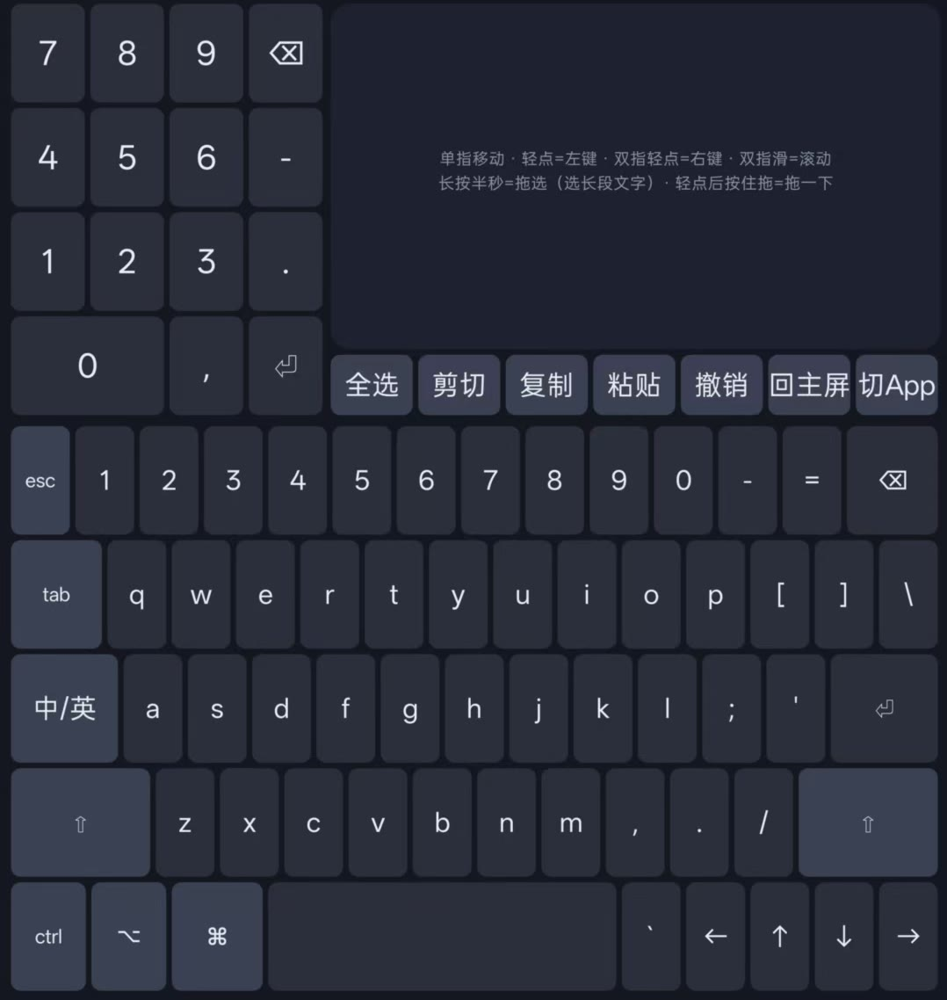

手机键盘
OPPO Find N6 专属版出门带 iPad 不想背键盘：把手机展开，上面左边是数字键、右边是触控板，下面是整块键盘。iPad 把它当成普通的蓝牙键盘和鼠标，不用装任何东西，屏幕上的软键盘也会自动收起。

下载安装包（v0.4，25 KB）安卓 10 及以上。布局按 Find N6 展开屏排的，其他安卓手机能装，但手机系统得支持「模拟蓝牙键盘」，部分品牌不支持。
第一次连 iPad
- 装好打开「手机键盘」，系统问「附近设备」权限时选允许。安装时提示「未知来源」，选继续安装。
- 点屏幕最上面的状态栏，选「让 iPad 搜到我」。
- 去 iPad 的 设置 → 蓝牙，点手机的名字配对。状态栏的点变绿就能用了。
- iPad 搜不到时反过来：先在手机蓝牙设置里和 iPad 配对，再回 App 点状态栏选「连接已配对的」。以后打开会自动连上次那台。
怎么用
- 打中文用 iPad 自带的拼音；「中/英」键切输入法。
- ⇧ ctrl ⌥ ⌘ 点一下锁住，管下一个键；也可以一指按住、另一指按键。
- 触控板照 MacBook 的习惯：单指移动，轻点左键，双指轻点右键，双指滑动滚动。
- 选长段文字：在触控板上按住不动半秒（会震一下），然后滑动；抬手换位置可以接着选，轻点一下结束。
- 触控板下面一排：全选、剪切、复制、粘贴、撤销、回主屏、切 App。没做三指手势，因为 OPPO 系统把三指上滑和下滑留给了自己。
谁会点开、AI 素材
给出门带 iPad、又不想多背一个键盘的人。代码全部是 AI 协作写的，截图是真机截的，没有 AI 生成的图片和声音。